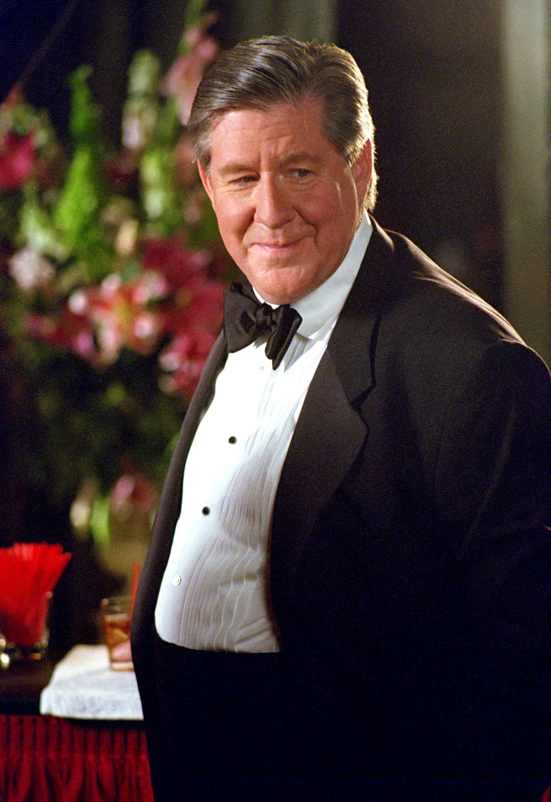

Biography
Gilmore Girls is about a mother, Lorelai Gilmore, and daughter, Rory Gilmore who have a very special bond. It takes place in a small town in Connecticut town populated by people who are very different from one another.
Lorelai owns a bed-and-breakfast with best friend/chef Sookie called, the Dragonfly Inn and Lorelai has a thing for coffee aswell as the towns diner owner, Luke. Both have weekly dinners with Rory's grandparents Richard
and Emily Gilmore. After high school, Rory attends Yale University but frequently returns to Stars Hollow to visit her mom and stay connected to her roots.
Meet the cast...


Left to right: [1] Rory Gilmore, [2] Lorelai Gilmore, [3] Sookie St. James, [4] Luke Danes [5] Richard Gilmore [6] Emily Gilmore
Rory's Life...
Rory Gilmore has a preety good life. It goes from her grandparents helping her mom pay for her private school education along with later paying for Yale.
She has had a few relationships such as ...
- Dean Forester
- Logan Huntzberger
- Jess Mariano
| Season |
Number of Episodes |
| 1 |
21 |
| 2 |
22 |
| 3 |
22 |
| 4 |
22 |
| 5 |
22 |
| 6 |
22 |
| 7 |
22 |